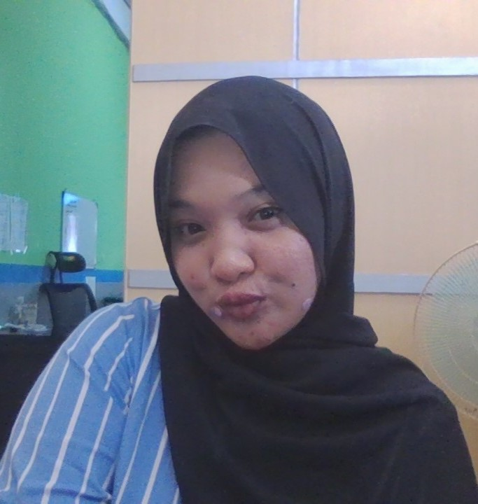

Selamat datang di website pribadi saya. Website ini dibuat untuk memenuhi Tugas 3 mata kuliah Komputasi Awan. Melalui website ini, saya akan membahas konsep Cloud Computing, jenis layanan, manfaat, risiko, serta hasil tugas pembelajaran yang telah dikerjakan.
Pelajari Materi →Website ini terdiri dari tiga halaman utama, yaitu Beranda, Materi Komputasi Awan, dan Portofolio Tugas.